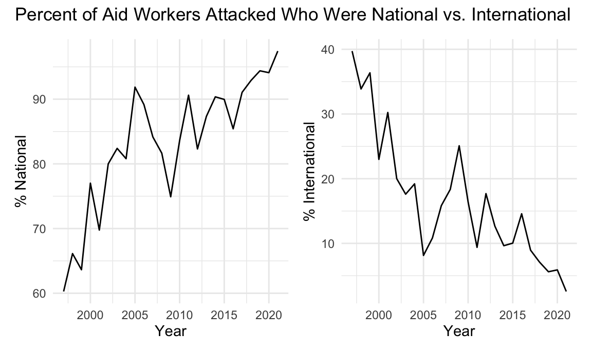
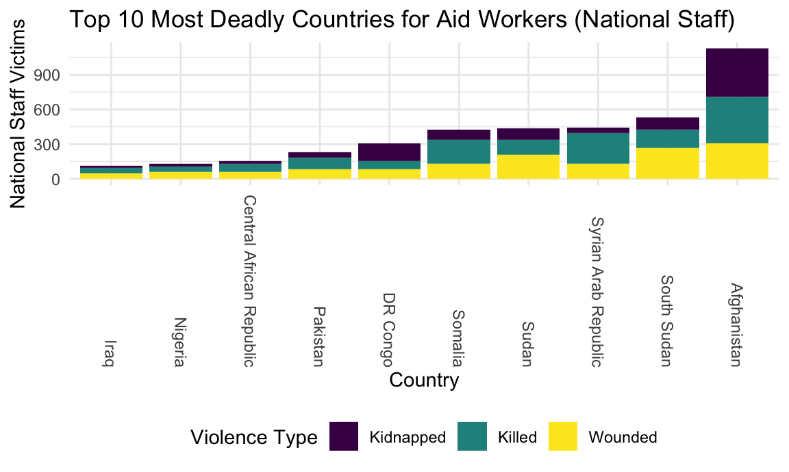
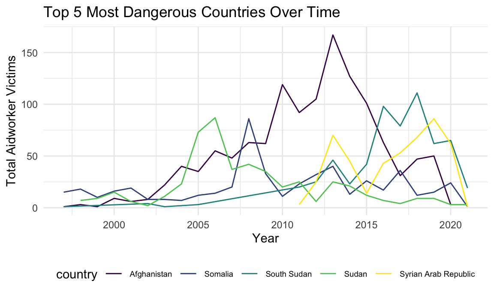
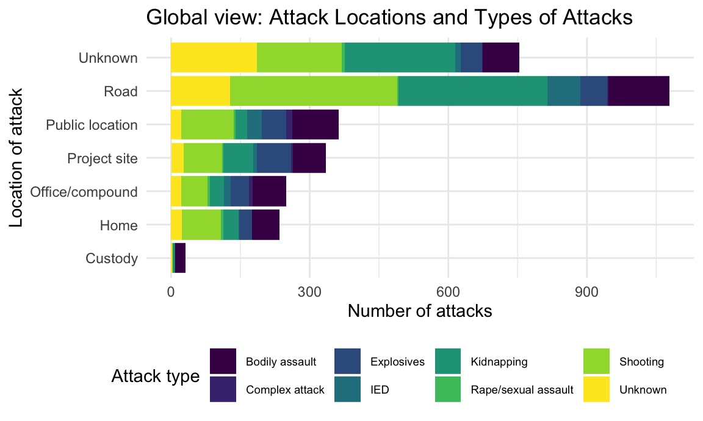
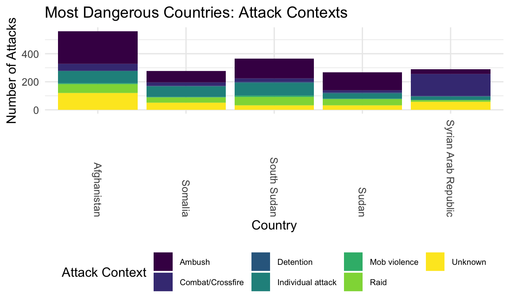

url = "https://aidworkersecurity.org/incidents/search"
aidworker_html = read_html(url)
aidworker_df =
aidworker_html %>%
html_nodes(css = "table") %>%
first() %>%
html_table() %>%
as_tibble()
aidworker_df =
aidworker_df %>%
janitor::clean_names() %>%
select(-source, -verified) %>%
rename(year = year_sort_descending) %>%
mutate(intl_org_affected =
case_when(
un != 0 ~ "yes",
ingo != 0 ~ "yes",
icrc_and_ifrc != 0 ~ "yes",
nngo != 0 ~ "no",
other != 0 ~ "yes",
nrcs != 0 ~ "no"),
intl_org_affected = as.factor(intl_org_affected)) %>%
mutate(
latitude = as.numeric(latitude),
longitude = as.numeric(longitude)
) %>%
relocate(id, month, day, year, country, intl_org_affected)
## This is a function that should turn strings with empty spaces into NA
empty_as_na <- function(x){
if("factor" %in% class(x)) x <- as.character(x)
ifelse(as.character(x)!="", x, NA)
}
aidworker_df =
aidworker_df %>% mutate_each(funs(empty_as_na))
aidworker_df =
aidworker_df %>%
filter(country != "Total") %>%
mutate(attack_abr = case_when(
means_of_attack == "Kidnap-killing" ~ "Kidnapping",
means_of_attack == "Kidnapping" ~ "Kidnapping",
means_of_attack == "Body-borne IED" ~ "IED",
means_of_attack == "Vehicle-born IED" ~ "IED",
means_of_attack == "Roadside IED" ~ "IED",
means_of_attack == "Landmine" ~ "Explosives",
means_of_attack == "Shelling" ~ "Explosives",
means_of_attack == "Other Explosives" ~ "Explosives",
means_of_attack == "Aerial bombardment" ~ "Explosives",
means_of_attack == "Rape/sexual assault" ~ "Rape/sexual assault",
means_of_attack == "Complex attack" ~ "Complex attack",
means_of_attack == "Shooting" ~ "Shooting",
means_of_attack == "Unknown" ~ "Unknown",
means_of_attack == "Bodily assault" ~ "Bodily assault"
))Modern humanitarian action began in 1859 with the founding of the Red Cross movement after activist Henri Dunant witnessed battlefield suffering in Solferino, Italy and envisioned a neutral party that could assist victims of conflict. Aidworkers today follow common core principles of humanity, neutrality, impartiality, and independence to assist any person in need: and as such, should be protected from violence themselves. Unfortunately, the world is becoming more dangerous for those who provide humanitarian assistance.
Incidents of aid worker attacks have been increasing globally over the past 23 years of data collection, as the plot below shows. Hover over points to display total victims in each year, with a breakdown of ‘national’ (local) staff and ‘international’ (expatriate) staff affected.
plot_1 =
aidworker_df %>%
group_by(year) %>%
summarize(tot_attacks = n_distinct(id),
tot_national = sum(total_national_staff),
tot_intl = sum(total_international_staff),
tot_both = sum(total_victims)) %>%
mutate(text_label =
str_c("Total Victims: ", tot_both, "\nInternational Staff: ", tot_intl,
"\nNational Staff: ", tot_national)) %>%
plot_ly(
x = ~year, y = ~tot_attacks, text = ~text_label,
type = "scatter", mode = "markers")
layout(plot_1, title = "Aid Worker Attacks Over Time", xaxis = list(title = "Year"), yaxis = list(title = "Number of Attack Incidents"))This rise in aid worker attacks is disproportionately affecting national staff. The next two plots show this increased violence toward national staff over time. Notably, the percentage of total victims who are national staff is rising, while the proportion of international staff victims has decreased.
aidworker_df %>%
drop_na(year) %>%
group_by(year) %>%
summarize(tot_national = sum(total_national_staff),
tot_intl = sum(total_international_staff),
tot_both = sum(total_victims)) %>%
ggplot(aes(x = year)) +
geom_line(aes(y = tot_national, color = "National Staff")) +
geom_line(aes(y = tot_intl, color = "International Staff")) +
labs(title = "Aid Worker Attacks Over Time",
x = "Year",
y = "Number of Aid Workers Attacked")pct_ntl =
aidworker_df %>%
group_by(year) %>%
summarize(tot_national = sum(total_national_staff),
tot_intl = sum(total_international_staff),
tot_both = sum(total_victims),
pct_intl = (tot_intl/tot_both)*100,
pct_national = (tot_national/tot_both)*100) %>%
ggplot(aes(x = year, y = pct_national)) +
geom_line() +
labs(
x = "Year",
y = "% National"
)
## Plot of percentage of internationals affected by attacks over time
pct_intl =
aidworker_df %>%
group_by(year) %>%
summarize(tot_national = sum(total_national_staff),
tot_intl = sum(total_international_staff),
tot_both = sum(total_victims),
pct_intl = (tot_intl/tot_both)*100,
pct_national = (tot_national/tot_both)*100) %>%
ggplot(aes(x = year, y = pct_intl)) +
geom_line() +
labs(
x = "Year",
y = "% International"
)
pct_ntl + pct_intl +
plot_annotation(title = "Percent of Aid Workers Attacked Who Were National vs. International")
As the interactive plot below shows, the violence against aid workers is concentrated primarily in a few countries, with a very high number of aid worker victims in Afghanistan.
plot_2 =
aidworker_df %>%
group_by(country) %>%
summarize(tot_attacks = n_distinct(id),
tot_national = sum(total_national_staff),
tot_intl = sum(total_international_staff),
tot_victims = sum(total_victims)) %>%
mutate(rank = min_rank(desc(tot_victims))) %>%
filter(rank < 51) %>%
mutate(country = fct_reorder(country, tot_victims)) %>%
mutate(text_label =
str_c("Total Victims: ", tot_victims, "\nRank: ", rank, "\nInternational Staff: ",
tot_intl, "\nNational Staff: ", tot_national)) %>%
plot_ly(
x = ~country, y = ~tot_victims, text = ~text_label,
type = "scatter", mode = "markers")
layout(plot_2,
margin = list(l=25, r=50, b=100, t=50, pad=0),
title = "Top 50 Most Dangerous Countries for Aid Workers",
xaxis = NULL,
yaxis = list(title = "Total Victims"))The next two plots look at the top 10 countries for national staff victims and international staff victims: demonstrating the proportion of victims who were wounded, kidnapped, and killed.
danger_countries_df =
aidworker_df %>%
group_by(country) %>%
summarize(tot_affected_per_country = sum(total_national_staff, na.rm = TRUE)) %>%
mutate(rank = min_rank(desc(tot_affected_per_country))) %>%
filter(rank < 11)
aidworker_df %>%
filter(country %in% c("Afghanistan", "Central African Republic", "DR Congo",
"Iraq", "Pakistan", "Somalia", "South Sudan", "Sudan",
"Syrian Arab Republic", "Nigeria")) %>%
group_by(country) %>%
summarize("Killed" = sum(nationals_killed),
"Wounded" = sum(nationals_wounded),
"Kidnapped" = sum(nationals_kidnapped),
tot_natl = sum(total_national_staff)) %>%
pivot_longer(
"Killed":"Kidnapped",
names_to = "Violence_type",
values_to = "Number"
) %>%
mutate(country = fct_reorder(country, tot_natl)) %>%
ggplot(aes(x = as.factor(country), y = Number, fill = Violence_type)) +
geom_bar(stat="identity") +
labs(
title = "Top 10 Most Deadly Countries for Aid Workers (National Staff)",
x = "Country",
y = "National Staff Victims"
) +
viridis::scale_fill_viridis(
name = "Violence Type",
discrete = TRUE
) +
theme(axis.text.x = element_text(angle = -90, vjust = 0.5, hjust=1))
In Syria and Somalia, national staff were killed more than they were kidnapped or simply wounded.
danger_countries_df =
aidworker_df %>%
group_by(country) %>%
summarize(tot_affected_per_country = sum(total_international_staff, na.rm = TRUE)) %>%
mutate(rank = min_rank(desc(tot_affected_per_country))) %>%
filter(rank < 11)
aidworker_df %>%
filter(country %in% c("Afghanistan", "Chechnya", "DR Congo",
"Iraq", "Kenya", "Somalia", "South Sudan", "Sudan",
"Syrian Arab Republic", "Yemen", "Libyan Arab Jamahiriya")) %>%
group_by(country) %>%
summarize("Killed" = sum(internationals_killed),
"Wounded" = sum(internationals_wounded),
"Kidnapped" = sum(internationals_kidnapped),
tot_intl = sum(total_international_staff)) %>%
pivot_longer(
"Killed":"Kidnapped",
names_to = "Violence_type",
values_to = "Number"
) %>%
mutate(country = fct_reorder(country, tot_intl)) %>%
ggplot(aes(x = as.factor(country), y = Number, fill = Violence_type)) +
geom_bar(stat="identity") +
labs(
title = "Top 11 Most Deadly Countries for Aid Workers (International Staff)",
x = "Country",
y = "International Staff Victims"
) +
viridis::scale_fill_viridis(
name = "Violence Type",
discrete = TRUE
) +
theme(axis.text.x = element_text(angle = -90, vjust = 0.5, hjust=1))Kidnapping comprises a greater proportion of attacks among international staff in many countries than among national staff. Libya and Kenya tied for 10th most international victims.
The table below ranks the top 10 countries by number of attacks and demonstrates the percentage of international and national staff victims who were killed or kidnapped.
aidworker_df %>%
group_by(country) %>%
summarize(attacks = n_distinct(id),
nationals = sum(total_national_staff),
internationals = sum(total_international_staff),
tot_victims = sum(total_victims),
sum_national_kill = sum(nationals_killed),
sum_national_kidnap = sum(nationals_kidnapped),
pct_nationals_killed = (sum_national_kill/nationals)*100,
pct_nationals_kidnapped = (sum_national_kidnap/nationals)*100,
sum_intl_kill = sum(internationals_killed),
sum_intl_kidnap = sum(internationals_kidnapped),
pct_intl_killed = (sum_intl_kill/internationals)*100,
pct_intl_kidnapped = (sum_intl_kidnap/internationals)*100) %>%
mutate(rank = min_rank(desc(attacks))) %>%
filter(rank < 11) %>%
arrange(rank) %>%
select(country, rank, attacks, nationals, pct_nationals_killed,
pct_nationals_kidnapped, internationals, pct_intl_killed, pct_intl_kidnapped) %>%
knitr::kable()| country | rank | attacks | nationals | pct_nationals_killed | pct_nationals_kidnapped | internationals | pct_intl_killed | pct_intl_kidnapped |
|---|---|---|---|---|---|---|---|---|
| Afghanistan | 1 | 561 | 1127 | 36.11358 | 36.82343 | 131 | 35.11450 | 32.82443 |
| South Sudan | 2 | 366 | 534 | 30.52434 | 20.03745 | 65 | 16.92308 | 18.46154 |
| Syrian Arab Republic | 3 | 290 | 441 | 60.31746 | 10.43084 | 29 | 24.13793 | 62.06897 |
| Somalia | 4 | 276 | 426 | 48.35681 | 21.12676 | 90 | 27.77778 | 61.11111 |
| Sudan | 5 | 266 | 437 | 28.60412 | 23.56979 | 54 | 16.66667 | 55.55556 |
| DR Congo | 6 | 169 | 308 | 23.05195 | 49.67532 | 27 | 14.81481 | 29.62963 |
| Pakistan | 7 | 108 | 232 | 42.24138 | 22.41379 | 21 | 33.33333 | 14.28571 |
| Central African Republic | 8 | 102 | 151 | 45.69536 | 15.89404 | 16 | 18.75000 | 31.25000 |
| Yemen | 9 | 73 | 112 | 28.57143 | 35.71429 | 35 | 34.28571 | 62.85714 |
| Iraq | 10 | 67 | 112 | 42.85714 | 16.07143 | 34 | 50.00000 | 35.29412 |
Finally, this plot shows victims of the top 5 most dangerous countries over time. Context for the spike in attacks in Afghanistan in 2013 is discussed in the accompanying “Zoom In” tab. A rise in attacks in Syria corresponds to the start of the Syrian Civil War in 2011.
danger_countries_df =
aidworker_df %>%
group_by(country) %>%
summarize(tot_affected_per_country = sum(total_victims, na.rm = TRUE)) %>%
mutate(rank = min_rank(desc(tot_affected_per_country))) %>%
filter(rank < 11)
aidworker_df %>%
filter(country %in% c("Afghanistan", "Somalia", "South Sudan", "Sudan",
"Syrian Arab Republic")) %>%
group_by(country, year) %>%
summarize(tot_victims = sum(total_victims)) %>%
ggplot(aes(x = year, y = tot_victims, color = country)) +
geom_line() +
labs(
title = "Top 5 Most Dangerous Countries Over Time",
x = "Year",
y = "Total Aidworker Victims"
) +
theme(legend.text=element_text(size=7))
As we see below, most aidworker attacks globally occur during transit, on roadways. The large portion of ‘unknown’ attack locations and attack types is indicative of challenges in collecting comprehensive data during humanitarian emergencies.
aidworker_df %>%
group_by(location, attack_abr) %>%
summarize(attacks = n_distinct(id)) %>%
mutate(location = as.factor(location),
location = fct_reorder(location, attacks)) %>%
ggplot(aes(x = location, y = attacks, fill = attack_abr)) +
geom_bar(stat="identity") +
coord_flip() +
labs(title = "Global view: Attack Locations and Types of Attacks",
x = "Location of attack",
y = "Number of attacks") +
viridis::scale_fill_viridis(
name = "Attack type",
discrete = TRUE
) +
theme(legend.text=element_text(size=7))
The 5 most dangerous countries are shown below with type and contexts of attacks. Here, attack type refers to the means of violence, while attack context refers to the broader context of the incident.
danger_countries_df =
aidworker_df %>%
group_by(country) %>%
summarize(tot_attacks = sum((n_distinct(id)), na.rm = TRUE)) %>%
mutate(rank = min_rank(desc(tot_attacks))) %>%
filter(rank < 6)
aidworker_df %>%
filter(country %in% c("Afghanistan", "Somalia", "South Sudan", "Sudan",
"Syrian Arab Republic")) %>%
group_by(country, attack_abr) %>%
summarize(attacks = n_distinct(id)) %>%
mutate(country = as.factor(country),
location = fct_reorder(country, attacks)) %>%
ggplot(aes(x = country, y = attacks, fill = attack_abr)) +
geom_bar(stat="identity") +
labs(title = "Most Dangerous Countries: Attack Types",
x = "Country",
y = "Number of Attacks") +
theme(axis.text.x = element_text(angle = -90, vjust = 0.5, hjust=1)) +
theme(legend.text=element_text(size=7)) +
viridis::scale_fill_viridis(
name = "Attack type",
discrete = TRUE
)aidworker_df %>%
filter(country %in% c("Afghanistan", "Somalia", "South Sudan", "Sudan",
"Syrian Arab Republic")) %>%
group_by(country, attack_context) %>%
summarize(attacks = n_distinct(id)) %>%
mutate(country = as.factor(country),
location = fct_reorder(country, attacks)) %>%
ggplot(aes(x = country, y = attacks, fill = attack_context)) +
geom_bar(stat="identity") +
labs(title = "Most Dangerous Countries: Attack Contexts",
x = "Country",
y = "Number of Attacks") +
theme(axis.text.x = element_text(angle = -90, vjust = 0.5, hjust=1)) +
theme(legend.text=element_text(size=7)) +
viridis::scale_fill_viridis(
name = "Attack Context",
discrete = TRUE
)
Afghanistan experienced the greatest proportion of attacks by kidnapping or IEDs, while bodily assault was most common in South Sudan, and explosives (including all bombing, shelling, and aerial bombardment) were most common in Syria.
Ambushing, individual attacks, and raids were common in all danger countries. Aid workers in Syria experienced a large number of attacks by combat or crossfire: although the AWSD notes this does not exclude intentional targeting of humanitarian locations by combatants. Intentional targeting of health facilities in particular by Russian and Syrian airstrikes has been well documented. (via The Century Foundation)
Finally, the interactive plot below depicts the gender gap in aid worker victims for the most dangerous countries. Men outnumber women for all attack types other than sexual assault. Bubble size corresponds to the degree of gap, with a bubble for each attack type in each country.
plot_gender =
aidworker_df %>%
filter(country %in% c("Afghanistan", "Somalia", "South Sudan", "Sudan",
"Syrian Arab Republic")) %>%
group_by(country, attack_abr) %>%
summarize(total_women = sum(gender_female),
total_men = sum(gender_male),
gap = total_men - total_women,
tot_victims = sum(total_victims)) %>%
mutate(text_label =
str_c("Country: ", country, "\nAttack Type: ", attack_abr)) %>%
plot_ly(
x = ~total_men, y = ~total_women, text = ~text_label, color = ~country, size = ~gap,
type = "scatter", mode = "markers", colors = "viridis",
sizes = c(50, 700), marker = list(opacity = 0.7))
layout(plot_gender, title = "Dangerous Country Gender Gap by Attack Type", xaxis = list(title = "Number of Men Attacked"), yaxis = list(title = "Number of Women Attacked"))